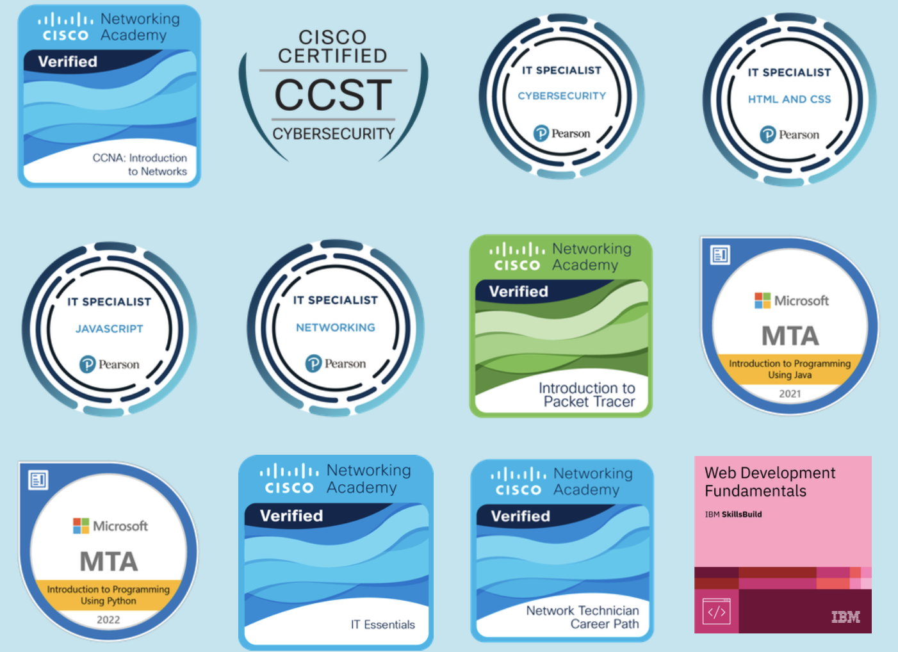

Sobre Mi
Soy Ingeniero en Sistemas con sólidos conocimientos en desarrollo de software, bases de datos y programación. Busco integrarme a una empresa o institución donde pueda aportar soluciones innovadoras, optimizar procesos mediante el uso eficiente de sistemas y continuar desarrollándome profesionalmente en un entorno dinámico y colaborativo.
Contacto
- Teléfono: +502 5960-2164
- Email: urielmonterroso@gmail.com
- Perfil de LinkedIn
- Dirección: Zona 7, Guatemala, Guatemala
- Fecha de Nacimiento: 21-02-2000 (26 años)
- Perfil de Credly
Educación
Graduado de la carrera de Ingenieria en Sistemas de Informacion y Ciencias de la Computación - Univesidad Mariano Gálvez de Guatemala (2019-2025)
Bachillerato Industrial y Perito con Especialidad en Computación - Colegio Particular Mixto "Liceo Minerva" (2016-2018)
Experiencia Laboral
-
Técnico de Soporte de McAfee
Everise, Ciudad de Guatemala, 08/2025 - 11/2025- Atender y resolver incidencias técnicas relacionadas con Antivirus y productos de McAfee.
- Instalar, configurar y actualizar el software de seguridad.
- Realizar diagnósticos de rendimiento y compatibilidad del sistema.
- Gestionar reportes de fallos, documentar casos y soluciones.
-
Programador Jr.
AdTechGT, San Marcos, 07/2024 - 07/2025- Desarrollar interfaces de usuario (frontend), lógica de servidor (backend) y administrar bases de datos.
- Implementar y consumir APIs. Gestionar control de versiones, realizar pruebas, mantenimiento corrección de errores.
- Colaborar con equipos y documentación de código.
-
Agente de Servicio al Cliente
24-7 A.I., Quetzaltenango 05/2022 - 07/2024- Gestión eficiente del equipo de profesionales a cargo.
- Trabajo en equipo para facilitar el cumplimiento de objetivos, elaboración de informes y reportes.
- Atención telefónica y gestión del correo electrónico de la empresa.
Idiomas
Español: Nativo
English: Intermedio
Habilidades
- Programación: Java, Python, C++, JavaScript, C#, PHP.
- Desarrollo Web: HTML, CSS, React, Node.js, .NET, Django.
- Base de Datos: MySQL, SQLServer, MongoDB.
- Control de Versiones: Git.
- Ciberseguridad
- Redes y Telecomunicaciones
- Sistemas Operativos: Windows, Mac OS, Linux
- Soft Skills (Habilidades Blandas): Comunicación, Trabajo en Equipo, Resolución de Problemas
Formación Complementaria
- Cursos de ingles aprobados por IGA y EF SET.
- Certificaciones en ciberseguridad aprobadas por CISCO y Certiport.
- Certificaciones en programación aprobados por Certiport y Microsoft.
- Certificaciones en redes y telecomunicaciones aprobadas por CISCO Networking Academy.
- Certificaciones en desarrollo web aprobadas por IBM.
Referencias
- Ruth de Leon (Cel. +502 5629-7013)
- Andree Orozco (Cel. +502 4246-0722)
- Diego Fuentes (Cel. +502 5428-8242)
Certificaciones
